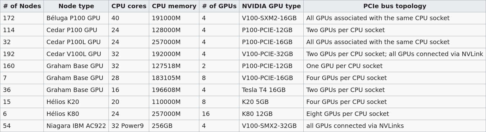

Deep learning on production clusters
This section is a summary of relevant information while using Python in an HPC context for deep learning.
Run code in a job
When you ssh into one of the Alliance clusters, you log into the login node.
Everybody using a cluster uses that node to enter the cluster. Do not run anything computationally intensive on this node or you would make the entire cluster very slow for everyone. To run your code, you need to start an interactive job or submit a batch job to Slurm (the job scheduler used by the Alliance clusters).
Plots
Do not run code that displays plots on screen. Instead, have them written to files.
Data
Copy files to/from the cluster
Few files
If you need to copy files to or from the cluster, you can use scp from your local machine.
Copy file from your computer to the cluster:
[local]$ scp </local/path/to/file> <user>@<hostname>:<path/in/cluster>Expressions between the < and > signs need to be replaced by the relevant information (without those signs).
Copy file from the cluster to your computer:
[local]$ scp <user>@<hostname>:<cluster/path/to/file> </local/path>Large amount of data
Use Globus for large data transfers.
The Alliance is starting to store classic ML datasets on its clusters. So if your research uses a common dataset, it may be worth inquiring whether it might be available before downloading a copy.
Large collections of files
The Alliance clusters are optimized for very large files and are slowed by large collections of small files. Datasets with many small files need to be turned into single-file archives with tar. Failing to do so will affect performance not just for you, but for all users of the cluster.
$ tar cf <data>.tar <path/to/dataset/directory>/*- If you want to also compress the files, replace
tar cfwithtar czf - As a modern alternative to
tar, you can use Dar
Interactive jobs
Interactive jobs are useful for code testing and development. They are not however the most efficient way to run code, so you should limit their use to testing and development.
You start an interactive job with:
$ salloc --account=def-<account> --cpus-per-task=<n> --gres=gpu:<n> --mem=<mem> --time=<time>Our training cluster does not have GPUs, so for this workshop, do not use the --gres=gpu:<n> option.
For the workshop, you also don’t have to worry about the --account=def-<account> option (or, if you want, you can use --account=def-sponsor00).
Our training cluster has a total of 60 CPUs on 5 compute nodes. Since there are many of you in this workshop, please be very mindful when running interactive jobs: if you request a lot of CPUs for a long time, the other workshop attendees won’t be able to use the cluster anymore until your interactive job requested time ends (even if you aren’t running any code).
Here are my suggestions so that we don’t run into this problem:
- Only start interactive jobs when you need to understand what Python is doing at every step, or to test, explore, and develop code (so where an interactive Python shell is really beneficial). Once you have a model, submit a batch job to Slurm instead
- When running interactive jobs on this training cluster, only request 1 CPU (so
--cpus-per-task=1) - Only request the time that you will really use (e.g. for the lesson on Python tensors, maybe 30 min to 1 hour seems reasonable)
- If you don’t need your job allocation anymore before it runs out, you can relinquish it with
Ctrl+d
Be aware that, on Cedar, you are not allowed to submit jobs from ~/home. Instead, you have to submit jobs from ~/scratch or ~/project.
Batch jobs
As soon as you have a working Python script, you want to submit a batch job instead of running an interactive job. To do that, you need to write an sbatch script.
Job script
Here is an example script:
#!/bin/bash
#SBATCH --job-name=<name>* # job name
#SBATCH --account=def-<account>
#SBATCH --time=<time> # max walltime in D-HH:MM or HH:MM:SS
#SBATCH --cpus-per-task=<number> # number of cores
#SBATCH --gres=gpu:<type>:<number> # type and number of GPU(s) per node
#SBATCH --mem=<mem> # max memory (default unit is MB) per node
#SBATCH --output=%x_%j.out* # file name for the output
#SBATCH --error=%x_%j.err* # file name for errors
#SBATCH --mail-user=<email_address>*
#SBATCH --mail-type=ALL*
# Load modules
# (Do not use this in our workshop since we aren't using GPUs)
# (Note: loading the Python module is not necessary
# when you activate a Python virtual environment)
# module load cudacore/.10.1.243 cuda/10 cudnn/7.6.5
# Create a variable with the directory for your ML project
SOURCEDIR=~/<path/project/dir>
# Activate your Python virtual environment
source ~/env/bin/activate
# Transfer and extract data to a compute node
mkdir $SLURM_TMPDIR/data
tar xf ~/projects/def-<user>/<data>.tar -C $SLURM_TMPDIR/data
# Run your Python script on the data
python $SOURCEDIR/<script>.py $SLURM_TMPDIR/data%xwill get replaced by the script name and%jby the job number- If you compressed your data with
tar czf, you need to extract it withtar xzf SBATCHoptions marked with a*are optional- There are various other options for email notifications
You may wonder why we transferred data to a compute node. This makes any I/O operation involving your data a lot faster, so it will speed up your code. Here is how this works:
First, we create a temporary data directory in $SLURM_TMPDIR:
$ mkdir $SLURM_TMPDIR/dataThe variable $SLURM_TMPDIR is created by Slurm on the compute node where a job is running. Its path is /localscratch/<user>.<jobid>.0. Anything in it gets deleted when the job is done.
Then we extract the data into it:
$ tar xf ~/projects/def-<user>/<data>.tar -C $SLURM_TMPDIR/dataIf your data is not in a tar file, you can simply copy it to the compute node running your job:
$ cp -r ~/projects/def-<user>/<data> $SLURM_TMPDIR/dataJob handling
Submit a job
$ cd </dir/containing/job>
$ sbatch <jobscript>.shCheck the status of your job(s)
$ sqPD = pending
R = running
CG = completing (Slurm is doing the closing processes)
No information = your job has finished running
Cancel a job
$ scancel <jobid>Efficiency of completed job
$ seff <jobid>GPU(s)
GPU types
Several Alliance clusters have GPUs. Their numbers and types differ:

The default is 12G P100, but you can request another type with SBATCH --gres=gpu:<type>:<number> (example: --gres=gpu:p100l:1 to request a 16G P100 on Cedar). Please refer to the Alliance Wiki for more details.
Number of GPU(s)
Try running your model on a single GPU first.
It is very likely that you do not need more than one GPU. Asking for more than you need will greatly increase your waiting time until your job is run. The lesson on distributed computing with PyTorch gives a few information as to when you might benefit from using several GPUs and provides some links to more resources. We will also offer workshops on distributed ML in the future. In any event, you should test your model before asking for several GPUs.
CPU/GPU ratio
Here are the Alliance recommendations:
Béluga:
No more than 10 CPU per GPU.
Cedar:
P100 GPU: no more than 6 CPU per GPU.
V100 GPU: no more than 8 CPU per GPU.
Graham:
No more than 16 CPU per GPU.
Code testing
It might be wise to test your code in an interactive job before submitting a really big batch job to Slurm.
Activate your virtual environment
$ source ~/env/bin/activateStart an interactive job
Example:
$ salloc --account=def-<account> --gres=gpu:1 --cpus-per-task=6 --mem=32000 --time=0:30:0Prepare the data
Create a temporary data directory in $SLURM_TMPDIR:
(env) $ mkdir $SLURM_TMPDIR/dataThe variable $SLURM_TMPDIR is created by Slurm on the compute node where a job is running. Its path is /localscratch/<user>.<jobid>.0. Anything in it gets deleted when the job is done.
Extract the data into it:
(env) $ tar xf ~/projects/def-<user>/<data>.tar -C $SLURM_TMPDIR/dataTry to run your code
Play in Python to test your code:
(env) $ python>>> import torch
>>> ...To exit the virtual environment, run:
(env) $ deactivateCheckpoints
Long jobs should have a checkpoint at least every 24 hours. This ensures that an outage won’t lead to days of computation lost and it will help get the job started by the scheduler sooner.
For instance, you might want to have checkpoints every n epochs (choose n so that n epochs take less than 24 hours to run).
In PyTorch, you can create dictionaries with all the information necessary and save them as .tar files with torch.save(). You can then load them back with torch.load().
The information you want to save in each checkpoint includes the model’s state_dict, the optimizer’s state_dict, the epoch at which you stopped, the latest training loss, and anything else needed to restart training where you left off.
For example, saving a checkpoint during training could look something like this:
torch.save({
'epoch': <last epoch run>,
'model_state_dict': net.state_dict(),
'optimizer_state_dict': optimizer.state_dict(),
'loss': <latest loss>,
}, <path/to/checkpoint-file.tar>)To restart, initialize the model and optimizer, load the dictionary, and resume training:
# Initialize the model and optimizer
model = <your model>
optimizer = <your optimizer>
# Load the dictionary
checkpoint = torch.load(<path/to/checkpoint-file.tar>)
model.load_state_dict(checkpoint['model_state_dict'])
optimizer.load_state_dict(checkpoint['optimizer_state_dict'])
epoch = checkpoint['epoch']
loss = checkpoint['loss']
# Resume training
model.train()TensorBoard on the cluster
TensorBoard allows to visually track your model metrics (e.g. loss, accuracy, model graph, etc.). It requires a lot of processing power however, so if you want to use it on an Alliance cluster, do not run it from the login node. Instead, run it as part of your job. This section guides you through the whole workflow.
Launch TensorBoard
First, you need to launch TensorBoard in the background (with a trailing &) before running your Python script. To do so, ad to your sbatch script:
tensorboard --logdir=/tmp/<your log dir> --host 0.0.0.0 &Example:
#!/bin/bash
#SBATCH ...
...
tensorboard --logdir=/tmp/<your log dir> --host 0.0.0.0 &
python $SOURCEDIR/<script>.py $SLURM_TMPDIR/dataConnection with your computer
Once the job is running, you need to create a connection between the compute node running TensorBoard and your computer.
First, you need to find the hostname of the compute node running the Tensorboard server. This is the value under NODELIST for your job when you run:
$ sqThen, from your computer, enter this ssh command:
[local]$ ssh -N -f -L localhost:6006:<node hostname>:6006 <user>@<cluster>.computecanada.caReplace <node hostname> by the compute node hostname you just identified, <user> by your user name, and <cluster> by the name of the Alliance cluster hostname—e.g. beluga, cedar, graham.
Access TensorBoard
You can now open a browser (on your computer) and go to http://localhost:6006 to monitor your model running on a compute node in the cluster!
Running several similar jobs
A number of ML tasks (e.g. hyperparameter optimization) require running several instances of similar jobs. Grouping them into a single job with GLOST or GNU Parallel reduces the stress on the scheduler.